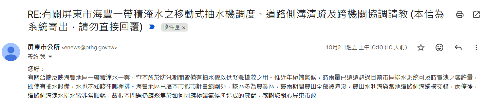

屏東的雨，一年比一年重
- 今年8月的極端降雨：2026年8月24日受西南氣流影響，屏東24小時累積雨量破540毫米，全縣15個鄉鎮市部分路段積淹水或封閉，山區713人撤離（582人依親、131人接受安置）。
來源：Yahoo新聞轉引地方媒體（2026-08-24）
- 6月底也淹過一次：颱風米克拉北移及西南風增強影響，屏東連兩日強降雨，累積雨量最高887.5毫米，僅次於莫拉克風災；萬丹鄉興化廍堤防潰堤，東港、新園、南州、林邊、崁頂、佳冬6鄉鎮因積淹水一度停班停課。
- 屏東市也在官方調查範圍內：屏東縣「屏東防災資訊整合平台」的災害潛勢分析，把「淹水易致災區調查」列為屏東市的既有圖資項目之一，代表市公所端本來就掌握這份風險評估，只是我查證時沒能在網路上找到屏東市逐里的公開明細清單——這正是我認為市公所該主動公開的資訊。
現有的案例復興公園：屏東市自己的示範案例
都市之肺，也是滯洪空間
屏東縣政府萬年溪水岸空間環境改善營造計畫，把復興公園改造成6.8公頃、含1.7公頃水域的親水公園，2021年完工開放。園區用礫間淨化、水生植物淨化等生態工法，每日可處理6.6萬噸水量，並設有橡皮壩調節水位，縣府把它定位為兼具生態淨化水區、都市滯洪空間與環境教育場域三種功能的水岸公園。
我主張：把這個模式定期公開、往北區推廣
復興公園的設計把滯洪跟環境教育放在同一個地方，不是二選一。我主張市公所應該把北區公園綠地的滯洪、耐淹改善進度定期公開，讓市民看得到規劃到哪一步；同時比照復興公園的環境教育做法，把防災教育帶進社區與校園，而不是等淹水了才臨時應對。
問政紀錄海豐一帶一下大雨就淹：我翻計畫、寫信問縣府
為什麼每次都是海豐
2026年8月29日海豐淹水那天，我人在現場。我去翻了縣政府今年4月修訂的《水災危險潛勢地區保全計畫》，海豐里的金城街、仁義里的海豐街都被點名要特別注意，官方寫的原因只有一句「地勢相對低漥」，對策是「改善排水系統」。同一份計畫記錄2024年凱米颱風時，海豐派出所旁的海豐街18巷有積水；今年6月25日，海豐外環道積水超過腳踝。
地勢低是地形，沒辦法改；能改的是水進來以後排不排得出去。海豐一帶的區域排水歸縣政府水利處，一般巷道的側溝歸市公所；海豐外環道是縣府闢建的屏17線延伸，側溝養護我另外寫信問縣府工務處。金城街旁那條水路，農田水利署10月15日回覆：那是管理處的小給水路，不兼做排水，區域排水的部分已轉給縣府。各段怎麼銜接、每一段能排多少水，我查不到公開資料。
縣府9月29日的回覆
9月初我寫信到縣長信箱，請縣府公開這一帶的排水排得動多少，也請他們把三個單位的分工講清楚、設一個單一窗口。縣府9月29日書面回覆，重點如下：
- 設計標準：牛稠溪排水和番仔寮溪排水，都是照10年重現期的洪水位設計，並以25年重現期不溢堤為原則。這是設計標準，現在實際排得動多少，回覆裡沒有寫。
- 淹水原因：番仔寮溪是下游武洛溪水位高，水排不出去倒灌回來；牛稠溪是上游渠道通水能力比較差。
- 抽水機：颱風豪雨要調移動式抽水機，由市公所視需要向縣府申請借用。而縣府今年的保全計畫裡，屏東市的抽水機預布點是0處。
- 單一窗口：縣府回覆「歉難建立」，說各機關之間維持橫向聯繫。
我接下來追的事
設計標準不等於現況。9月29日我又寫了三封信，分別給縣府、屏東市公所和農田水利署，問三件事：現在實際排得動多少、這幾年颱風天有沒有抽水機調到海豐、三個單位有沒有一起到現場會勘過。回覆出來，我會更新在這一頁。
家裡或路上積水，請打1999通報。每一筆通報都會留下紀錄，之後爭取經費時用得到。
追蹤：屏東市公所10月2日的回信
9月29日我寫信問屏東市公所五件事：公所自己有幾台移動式抽水機；今年6月25日、8月6日、8月29日海豐淹水那幾天，有沒有向縣府申請調抽水機過來；汛期前有沒有建議把海豐列進抽水機預布點；金城街、海豐街、外環道的側溝多久清一次；有沒有跟縣府水利處、農田水利署一起會勘過。
10月2日公所回覆了，五題都沒有回答數字或有沒有。公所的說法是：防汛期間備有抽水機；近年極端氣候，雨量遠超過市區排水系統能宣洩的量，「即使有抽水設備，水也不知該往哪裡排」；海豐在都市計畫範圍外，多是農業區；雨停後側溝排水非常順暢，根本問題是怎麼因應極端氣候。
對照縣府9月29日的回覆：抽水機由市公所視需要向縣府申請借用。縣府說抽水機由公所去借，公所說有抽水機水也不知往哪排，海豐淹水由誰負責，兩封回信都沒有講。
6月25日當天，屏東市長也到海豐外環道視察，聯合報有報導；報導沒有寫當天有沒有調抽水機，那天到底有沒有調，是我問的第二題，公所沒有回答。8月29日我在外環道看到側溝的水漫過路面，路和水溝分不出來。抽水機有幾台、那三天有沒有申請調度，這些是公所手上就有的紀錄。我已請市公所逐題答覆（追問中），回覆來了，我一樣會貼出來。

來源：屏東市公所2026年10月2日回覆（截圖如上）；聯合新聞網（2026-06-25）〈豪大雨殺蛇溪水快滿出來〉。
- 2026-06-25：海豐外環道積水超過腳踝。
- 2026-08-29：海豐淹水，我在現場。
- 2026年9月初：寫信到縣長信箱，請縣府公開排水能力、釐清三個單位分工、設單一窗口。
- 2026-09-29：縣府書面回覆；同日再寫信給縣府、屏東市公所、農田水利署追問。
- 2026-10-02：屏東市公所回覆，五題都沒有回答數字或有沒有；我已請公所逐題答覆（追問中）。
- 2026-10-15：農田水利署回覆，金城街周邊是管理處的小給水路、不兼做排水，區域排水已轉給縣府；同日寫信請縣府工務處說明海豐外環道側溝養護。
- 接下來：縣府回覆後，更新在本頁。
本段依屏東縣政府《水災危險潛勢地區保全計畫》（115年4月修訂）、縣府2026年9月29日書面回覆、屏東市公所10月2日回覆、農業部農田水利署10月15日回覆整理。10年、25年都是設計標準，不代表現況排水能力。
水資源・問政紀錄南亞科進駐屏東園區，枯水期的水誰先用？
10月1日確定進駐，我問用水怎麼分
10月1日國科會通過南亞科進駐南科屏東園區，廠要蓋起來就要用水。經濟部水利署南區水資源局說過，高雄地區每天需水約155萬噸，其中100到110萬噸是從高屏溪攔河堰取水；屏東這邊的農田、養殖也都要用水，現在再加上科學園區，枯水期水不夠的時候，到底誰先用？
水利法排了順序：家用跟公共給水第一、農業第二、工業排第四，但同一條也寫了，主管機關對特定水道或工業區，可以報請中央核准變更順序。2021年那次大旱，嘉南灌區一期稻作停灌了大約1.9萬公頃，農民領停灌補償，先停的是農業用水。
南亞科屏東廠預估一天要用多少水，目前官方還沒有公開。我沒有反對南亞科，我問的是用水怎麼分配。我提出三個問題：
- 南亞科屏東廠預估每天用多少水、水從哪裡來、再生水佔多少。
- 高屏溪的水在高雄、屏東跟園區之間怎麼分配。
- 遇到枯水期，停灌、調度的順序跟補償怎麼定。
這三題我10月5日已經分別寫信問了南科管理局跟水利署。
水利署10月7日回覆了：南科屏東園區的用水計畫是經濟部民國111年核定，整個園區規劃每天用水5,000立方公尺，水源是自來水和再生水。水源有限的時候，原則是依既有水權辦理，家用及公共給水優先，兼顧農業灌溉；平常由南區水資源分署邀高雄市政府、屏東縣政府、農田水利署和自來水公司開會調度，遇到枯旱再跟農業、科學園區、工業區的主管機關研商。水利署也附了113年的統計：屏東縣一年用水約8億6,499萬立方公尺，農業用水約占85%。
還沒回答到的：南亞科屏東廠自己一天要用多少水。園區用水計畫是111年核定的，南亞科是今年10月1日才通過進駐，每天5,000立方公尺有沒有把南亞科算進去，回覆沒有說。南科管理局那封，回覆來了再更新。屏東是農業大縣，產業進來，用水要先講清楚，不要為了工業犧牲農業。
本段依水利署2026年10月7日書面回覆、中央社、新頭殼、公視報導與水利法條文整理（連結見文末資料來源）；南亞科屏東廠的用水量，目前官方尚未公開，我不推估數字。
📌 本頁「屏東地區降雨與淹水」數據引自2026年6-8月兩波真實豪雨事件的新聞報導，受災地點以萬丹、東港、新園、南州、林邊、崁頂、佳冬、枋寮、泰武等鄉鎮為主，我沒有查到屏東市本身在這兩次事件中被列入停班停課或劃定的公開資料，這裡如實呈現，不誇大屏東市自身的受災程度；屏東市內的防汛熱點，以縣府《水災危險潛勢地區保全計畫》（115年4月修訂）為準，海豐一帶的部分見上方問政紀錄；本頁不使用查不到原始出處的數字，只呈現查得到來源的事實。常見問答FAQ
Q：游子昂在公園綠地政見上主張什麼？
A：比照復興公園「滯洪＋環境教育」的模式，要求市公所定期公開北區公園綠地的滯洪、耐淹改善進度，並把防災教育扎根社區。
Q：復興公園跟這個政見有什麼關係？
A：復興公園是萬年溪水岸改造計畫的一部分，縣府把它定位為兼具生態淨化、都市滯洪與環境教育三種功能的水岸公園，是屏東市內可以參考、往北區推廣的案例。
Q：屏東地區近期的降雨風險有多大？
A：2026年8月24日屏東24小時累積雨量破540毫米，15鄉鎮市部分路段積淹水或封閉，713人撤離；6月底另一波豪雨累積雨量最高887.5毫米，僅次於莫拉克風災。
Q：海豐一帶為什麼一下大雨就淹？縣府怎麼回覆？
A：縣府今年4月修訂的《水災危險潛勢地區保全計畫》寫的原因是「地勢相對低漥」，對策是「改善排水系統」。我9月寫信請縣府公開排水能力、講清楚分工，縣府9月29日回覆：牛稠溪排水和番仔寮溪排水的設計標準是10年重現期，但現在實際排得動多少沒有寫；抽水機由市公所視需要向縣府借用，而保全計畫裡屏東市的抽水機預布點是0處；三個單位設單一窗口，縣府回「歉難建立」。9月29日我再寫信給縣府、屏東市公所和農田水利署追問，回覆出來會更新在這一頁。
Q：屏東市公所怎麼回覆海豐淹水的追問？
A：我9月29日寫信問公所五件事：自有抽水機數量、6月25日與8月6日與8月29日有沒有申請調度、汛期前有沒有建議納入預布點、側溝多久清一次、有沒有跟縣府水利處與農田水利署會勘。10月2日公所回覆，五題都沒有回答數字或有沒有，說法是近年極端氣候雨量超過市區排水容量，「即使有抽水設備，水也不知該往哪裡排」。縣府9月29日的回覆則是抽水機由市公所視需要向縣府借用。我已請公所逐題答覆（追問中），回覆來了會更新在這一頁。
Q：南亞科進駐屏東園區，枯水期用水誰先？
A：水利法排的順序是家用與公共給水第一、農業第二、工業第四，但特定水道或工業區可以報請中央核准變更。2021年大旱，嘉南灌區一期稻作停灌約1.9萬公頃，先停的是農業用水。水利署10月7日回覆：南科屏東園區用水計畫經濟部111年核定，全園區規劃每天5,000立方公尺，水源是自來水和再生水；枯水期原則依既有水權、家用及公共給水優先，兼顧農業灌溉。南亞科屏東廠自己一天用多少水、5,000立方公尺有沒有算進南亞科，回覆沒有說，我會再追。
資料來源- 經濟部水利署・用水統計年報（113年各縣市用水量）
- 科學園區審議會通過13件投資案 南亞科將進駐南科屏東園區｜中央社（2026-10-01）
- 南水局：高雄每日需水約155萬噸，100–110萬噸由高屏溪攔河堰供應｜新頭殼（2019-08-11）
- 水利法第18條（用水標的順序）｜全國法規資料庫
- 嘉南明年一期稻作停灌 影響1.9萬公頃農地｜公視新聞
- 屏東豪雨24小時破540毫米！15鄉鎮市積淹水、713人撤離｜Yahoo新聞（2026-08-24）
- 屏東多區積淹水 6鄉鎮27日停班停課｜中央社（2026-06-26）
- 屏東強降雨興化廍潰堤水淹萬丹｜中央社（2026-06-26）
- 屏東防災資訊整合平台・災害潛勢分析（屏東市）
- 打造都市之肺 屏市復興公園令人驚艷｜屏東縣政府
- 屏市首座大型風雨籃球場啟用 復興公園水岸休憩空間｜聯合新聞網
- 屏東縣政府《水災危險潛勢地區保全計畫》（115年4月修訂）
- 屏東縣政府縣長信箱陳情與書面回覆（2026年9月初送出、09-29 回覆）
- 農業部農田水利署2026年10月15日書面回覆（金城街周邊為小給水路、不兼做排水，區域排水轉屏東縣政府）
- 屏東市公所2026年10月2日書面回覆